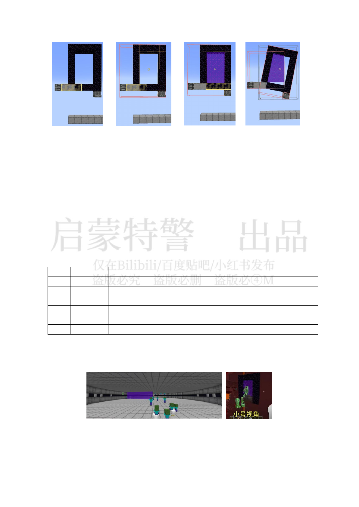

Minecraft 试题 第
3
页 共
8
页
第 1 步 第 2 步 第 3 步 第 4 步
如图所示，先按第 1 步放置蜂蜜胶，再使用蜂蜜胶连接平滑石头以外的所有
部分。启动左侧的旋转轴承后，整个结构物理化，拆除第 1 步的蜂蜜胶，激
活物理化结构中的传送门，启动右侧的旋转轴承后，由于物理化的传送门方
块与其他方块和物理结构互不阻挡，黑曜石框架脱离原有结构，传送门方块
将与左侧的旋转轴承形成一个整体。据此完成第 10、11、12 题。
10.对第 1 至 4 步的图片中的实体数量与最大方块亮度进行统计，正确的是
A.4 张图上的实体数分别为 1,1,1,2；最大方块亮度分别为 0,0,0,0
B.4 张图上的实体数分别为 1,1,1,2；最大方块亮度分别为 0,0,11,0
C.4 张图上的实体数分别为 0,1,1,2；最大方块亮度分别为 0,0,0,0
D.4 张图上的实体数分别为 0,1,1,2；最大方块亮度分别为 0,0,11,0
11.制作 蜂蜜胶的一个步骤是需要 使 用机械动力的 元件向 honey_level=5 的方
块抽取蜂蜜，为应用物理化传送门，下列步骤能够获取所需材料的是
在
honey_level=5
的蜂巢 下方放置 营火，对 蜂 巢使用剪 刀获
取蜜脾，使用蜜脾和木板合成蜂箱
在 火 把 上 方 毗 邻 的 位 置 放 沙 砾 ， 沙 砾 掉 落 后 有 概 率 得 到 燧
石，刷铁机量产获得铁锭，两者合成打火石
用精准采集附魔的镐采集石头，在高炉中烧炼取得平滑石头
12.某玩家利用物理化传送门的旋转原理建设了图示的双维度刷怪塔，怪物在
两层平台生成，中间的旋转轴承驱动物理化传送门快速旋转，将怪物“扫
描”进下界。下列关于刷怪塔建设与使用的叙述不合理的是
A.若加快旋转轴承转速，在一定程度上可提升刷怪效率
B.物理化的下界传送门方块不具有亮度，可防止对怪物生成造成干扰
C.“小号视角”的传送门无底部方块，可能对底部方块进行了物理化
D.刷怪塔两层之间有一层完整方块，因此要设置上下两个物理化传送门